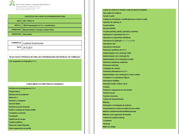

UFCD-0807-Programação COBOL - fundamentos
Formadora: Célia Maria Pinto Duarte
UFCD-0807-Portefólio Reflexivo de Aprendizagens
Trabalhos realizados
Tarefa 1-2.
O programa deve em seguida exibir os dados lidos
2. Calculando a média das notas das disciplinas e apresentando o resultado "Aprovado" se a média for superior ou igual a 10 e o resultado "Reprovado" se a média for inferior a 10.
Tarefa 1.
Tarefa 10. " Ficheiros2 - Notas - avaliação contínua"
Deverá ser uma versão semelhante ao programa Notas desenvolvido anteriormente, mas que permita guardar os dados em ficheiro e exibir diferentes tipos de listagens.
Deve começar por escrever dados no ficheiro, incluindo alunos com notas negativas e depois testar as listagens.
Deverá criar uma listagem de todos os alunos, uma de alunos aprovados (com média >= 10) e uma de alunos reprovados (com média < 10).
Tarefa 10.
Tarefa 11 - Ficheiros3 - Notas - avaliação contínua.
Opcionalmente, trabalhe com disciplinas constantes, por exemplo, Inglês, Programação, Matemática.
Aplique condition-names (88) ao seu programa de modo a poder usar o comando EVALUATE para obter as classificações qualitativas dos alunos:
Média entre:
1 e 4 - Muito Insuficiente
5 a 9 - Insuficiente
10 a 14 - Suficiente
15-17 - Bom
18-20 Muito Bom
Usar o EVALUATE também para as avaliações finais:
Média >= 10 - Aprovado
Média < 10 - Reprovado
O programa deve continuar até o utilizador pedir para sair (opção Sair no menu).
Em novas execuções, os novos dados devem ser acrescentados ao programa, em vez de criar um novo ficheiro (open extend Notas)
Tarefa 11.